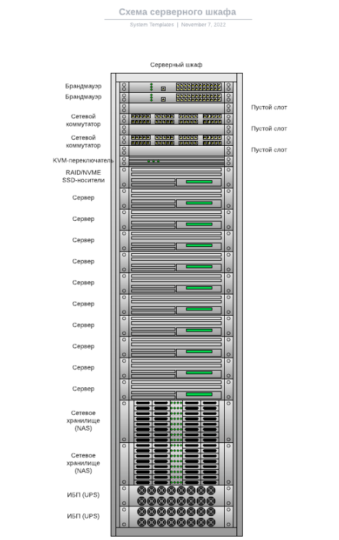
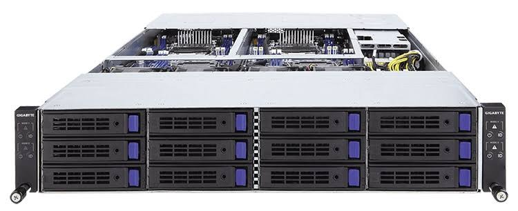
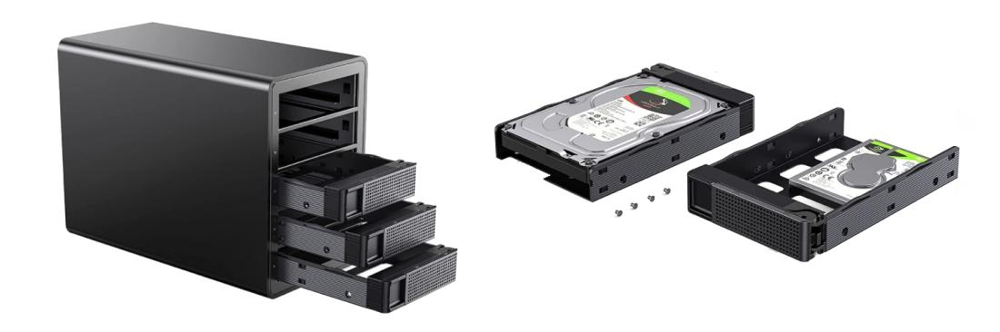
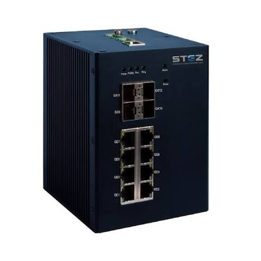
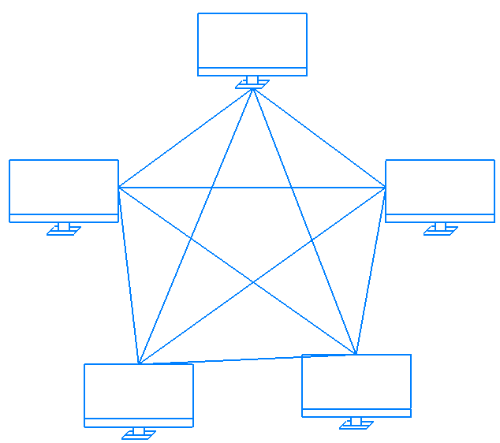
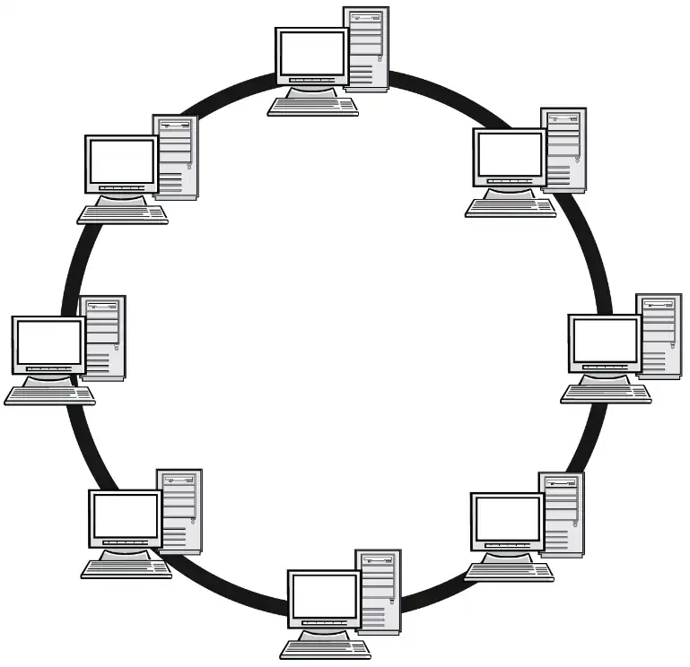
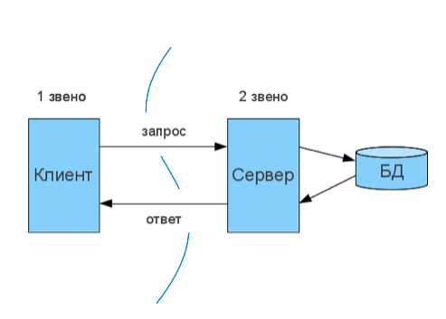
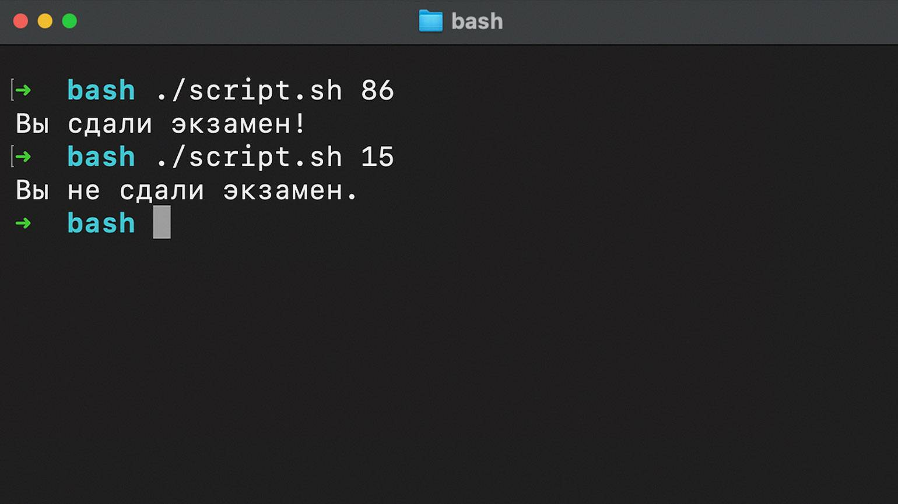
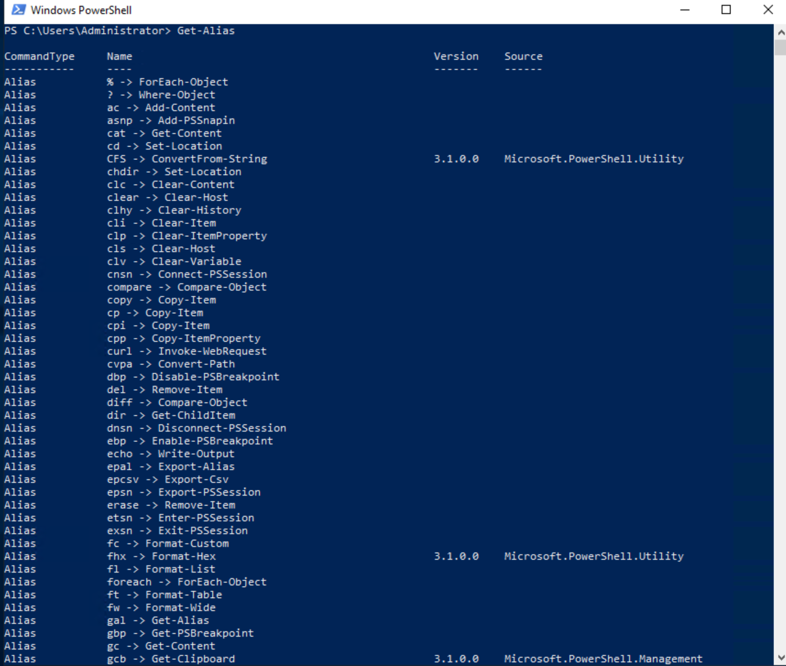
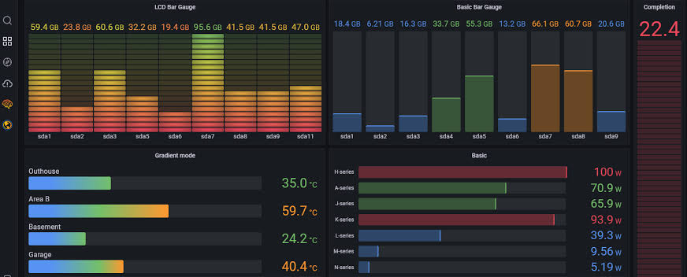

Галерея
Оборудование, схемы, интерфейсы и рабочие места системного администратора. Всё, что помогает понять, как выглядит инфраструктура вживую.
Серверное оборудование
Стойки, лезвийные серверы, СХД и системы охлаждения — физическая основа любой инфраструктуры. Эти фотографии помогут представить, как выглядит работа с «железом».




Схемы и топологии
Прежде чем собирать сеть, администратор рисует её схему. Ниже — типовые топологии, которые встречаются в учебных и рабочих проектах.



Интерфейсы и рабочие места
Консоль Linux, PowerShell в Windows, панели мониторинга — то, что сисадмин видит каждый день.


